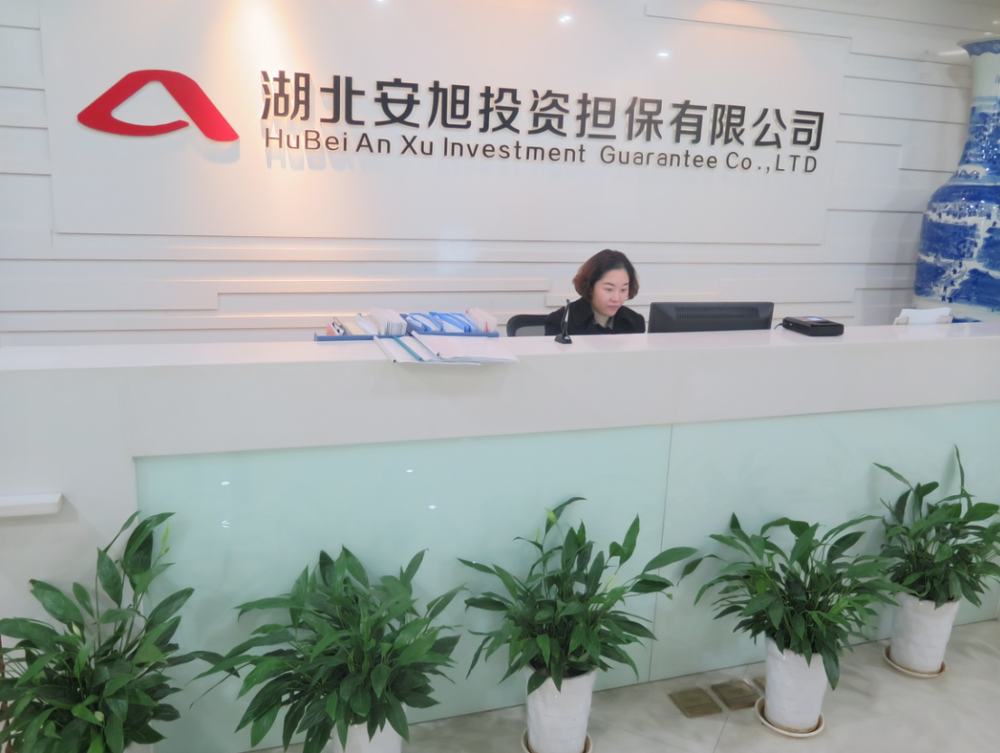

公司简介
湖北安旭投资担保有限公司成立于2005年1月，是经湖北省经济和信息化委员会批准成立的专业化融资担保机构，2013年8月公司通过了湖北省融资性担保公司考核验收，成为全省159家、武汉市55家首批合格融资性担保公司之一。
公司注册资金2.25亿元，位于国家级自主创新示范区—东湖高新技术开发区的光谷国际广场B座22层。经十堰市政府招商引资，公司在2013年3月获得省经信委的批文正式成立了十堰市分公司，并获得十堰市政府出具的关于承担风险处置责任的正式文件。2013年5月，成立襄阳办事处；2014年9月成立黄石办事处；2014年10月成立咸宁办事处。由此体现了公司以武汉8+1城市圈和十堰市、襄阳市、黄石、咸宁为战略发展重心，辐射全省的战略意图。
公司实行董事会领导下的总经理负责制，公司法人代表及总经理在金融、担保行业工作经验达二十年以上，领导着一支具有较深的专业化知识和丰富操作经验的工作团队。通过专业化的管理手段，对担保业务实施全过程风险管理，确保公司实现可持续发展和战略目标实现。 在人才的培养上，公司推行校企合作的人才培养模式，打造符合担保行业的专业人才。2012年，公司与武汉理工大学合作成立了人才联合培养基地，源源不断地为公司及担保行业的持续发展提供人才支撑。
作为武汉东湖信用担保协会（筹）发起人之一，公司致力于营造高新区良好的信用担保环境，提高为中小企业融资服务的能力和水平，努力提升担保机构经营管理水平和自主创新能力。
公司不仅在贷款担保、票据承兑担保、贸易融资担保、项目融资担保、信用证担保、诉讼保全担保领域有着经验丰富的团队，同时在投标担保、工程履约担保等履约担保业务，以及与担保业务有关的融资咨询、财务顾问等中介服务领域茁壮成长。 公司自成立以来，结合国家产业发展规划，借助招商银行、湖北银行、农商行、中国银行、中信银行、中国农业发展银行、东亚银行等多家优质金融服务平台，不断坚持探索创新业务模式，发展以产业集群为方向的目标客户群，打造以批量、集合的业务拓展模式，在业务的发展思路上独具匠心，努力达成与政府、行业协会、产业园区、银行、信托、证券等多方的友好合作，为企业提供多元化的金融服务。 目前公司已与中国银行、中国农业发展银行、招商银行、湖北银行、十堰农村商业银行、黄石农村商业银行等多家金融机构签订了授信合作协议，整体授信金额超过20亿元，在保余额突破10亿元。风险管理上实行董事会下设审计监察委员会、风险管理委员会和担保业务审批委员会，严格把控业务风险和经营风险。公司成立至今担保业务未发生一笔代偿。
公司树立“诚信、专业、服务、快捷”的价值观念，以客户至上为宗旨，把品牌建设作为重要的战略举措。公司将依托光谷国际资本市场平台，对接国际国内资本市场，瞄准湖北省中部崛起大格局，发展多元化融资担保业务，为社会提供全面、优质的融资服务，致力于成为跨区域集团化运作的上市公司。
“安”象征着公司实力雄厚，能在激烈的行业竞争中“安如泰山”；“旭”象征着公司蓬勃发展，业绩蒸蒸日上如“旭日东升”！